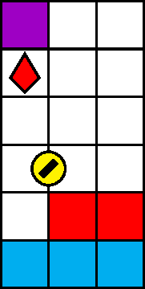

一般指針
愚形・半整数

指針
常に整数座標から整数座標へ移動するようにします．半整数の水平位置では立ち止まりません．
解説
整数座標とは，その行と列が共に整数の座標をいいます．ゲームの仕組み上，犬は非整数の水平位置を維持することができます．図 3.4.4.1 の犬は半整数の水平位置を取っています．
ブロックの落下による圧迫は，ブロックの落下停止を必ずしも伴いません．ブロック \(b\) が犬の深度を通過するとき，犬と \(b\) それぞれの水平位置がどれくらい近いかに応じて，犬は \(b\) から次の 3 種類の影響を受けます:
- 軽度に近い場合: 何も影響しない．場合により，犬は石に僅かに重なるように描画される．
- 中度に近い場合: 硬直を伴って，より犬に近いほうの整数水平位置（ブロックの反対側）へノックバックされる．
- 重度に近い場合: 圧迫判定が有効になり，ダメージを受ける．
目安として，犬とブロックそれぞれの水平位置の差の絶対値を \(d\) とすると， \(0.8 < d\) のとき軽度， \(0.6 < d \leq 0.8\) のとき中度， \(d \leq 0.6\) のとき重度であると思われます．図 3.4.4.1 の場合，犬と紫石の水平位置の差の絶対値は \(0.5\) なので，犬と紫石は重度に近く，紫石が落下すると犬は圧迫判定によりダメージを受けます．
犬が整数に近い水平位置を取っている場合，圧迫判定を受けうるブロックの水平位置の候補は 1 つだけである一方，犬が半整数に近い水平位置を取っている場合は候補が 2 つになり，犬は圧迫されやすくなります．このため，犬は半整数に近い水平位置で立ち止まるべきではありません．
犬が半整数の水平位置を取る状況の代表例は，図 3.4.4.1 に代表される「崖の先」ですが，実例はこれに限りません．平らな地形であっても半整数の水平位置を維持することは危険です．